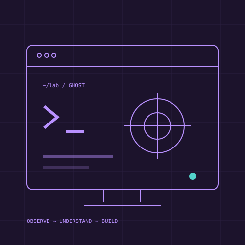

ENTRA OR CI/CD
Focused security review
One agreed environment or workflow. Evidence review, a prioritized findings report, and a walkthrough. Final scope and fee confirmed before work.
From $800
Draft pricing · final quote by agreement
CLOUD SECURITY · PRACTICAL DEFENSE
Focused security reviews for cloud identity, CI/CD, and the controls that protect real systems. Clear evidence, prioritized findings, and a plan your team can use.
Scoped work · Written authorization · No credentials over email

THE IDEA / IN PRACTICE
Jordan brings cloud, AppSec, DevSecOps, IAM, and FedRAMP support experience. Every engagement starts with an agreed scope; a review does not promise certification, compliance, or a vulnerability-free environment.
ENTRA OR CI/CD
One agreed environment or workflow. Evidence review, a prioritized findings report, and a walkthrough. Final scope and fee confirmed before work.
CUSTOM SCOPE
A review shaped around your cloud identities, controls, and deployment paths. Deliverables, access, exclusions, and timing are set in writing.
ENGINEERING HELP
Turn findings into practical changes with your team. Changes are tested and approved through your existing workflow.
EXISTING PROJECT / FREE PREVIEW
The existing research website and free Quick Audit stay intact. The Field Manual and KubeScan remain unreleased; this concept does not enable their checkout.
Explore the security source ↗A SIMPLE APPROACH
Share the problem and system types, without secrets or customer data.
Agree deliverables, permissions, handling of evidence, fee, and timing.
Get a prioritized report and discuss the fixes that matter first.
A FEW GOOD QUESTIONS
No. Assessment work requires written authorization and stays within its scope.
The Quick Audit is a free preview. The Field Manual and KubeScan remain unreleased until their release criteria are met.
No. Support and engineering experience do not imply accredited assessment status or a certification service.
THE NEXT STEP
Describe the environment and the outcome you need. Keep credentials, tokens, and confidential findings out of the initial message.
Design review only
Live inquiries, appointments, purchases, and subscriptions are not enabled in this preview.
Explore the concept ↗